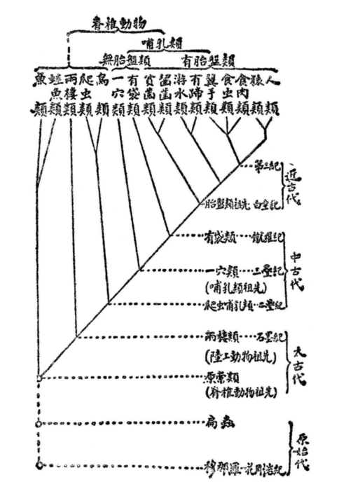

鲁迅-《人之历史》-现代文转述
鲁迅《坟》前四篇文言文之第一篇《人之历史》现代文转述
译者：几位耶
联系方式：jiweiyecau@163.com文档内容：将文言文原文转述为现代文，供具有高中语文知识水平的读者进行无障碍阅读。
转述原则：
- 将旧的人名译名、地名译名转换为现代通译名称；
- 为保证译文质量，将耆宿、非虚言也这类简单文言文词句保留，不译，用下划线标注。
主要参照资料：人民文学出版社2005年版《鲁迅全集 第一卷》
其他参照资料：
人之历史
1907.12，日本东京《河南》，原题《人间之历史》，署名令飞
进化论的观点，最早可以追溯到古希腊智者泰勒斯(Thales)的学说，直到达尔文(Ch. Darwin)创立了以自然选择为基础的进化论学说而基本确立。德国的海克尔(E.Haeckel)，跟英国的赫胥黎(T. H. Huxley)一样，都是近世讴歌和支持达尔文进化论的人，他们却也不拘泥于旧思想，提出了很多新的主张，建立种系发生学，创立生物进化的系谱树，追溯动植物的衍化踪迹，探究它们繁衍进化的原因，其中或有不足的地方，就用化石作为补充的证据。各种不同的动植物被按类别区分记录下来，实在是鸿篇巨著。上自单细胞生物，近到人类，所有这些汇聚成一个统一的体系，并且都考证的非常清楚。即使后世的学者还可以往更远更深处研究考证，永无止境，但是在十九世纪末谈到的进化论，本来在达尔文、赫胥黎、海克尔时期就已经基本完成了。进化的学说在中国近些年来几乎成为一个流行词了，喜新的人拿进化论来装饰自己的言论，使其听起来优美华丽，但是守旧的人却厌恶把人类和猴子并列，就极力反对进化论。德国哲学家保罗生(Fr.Paulsen)也说：“我因为读了海克尔的书而感到极大的羞耻。”德意志是学术汇集之地，保罗生也是个哲学家，却还有这样反对进化论的言论，那么在中国有一些抱残守缺的人，他们一听到新的观点，撒腿就跑，也就不奇怪了。尽管如此，人类的进化学说其实并没有亵渎作为万物灵长的人类，从低到高，人类始终在不断进化，没有穷尽；这样更能看出人类的能力要远远超过其他动物，那么人类起源于何处又有什么值得羞耻的呢？海克尔写了很多书，将这些理论阐述得很清楚，并且创立了种系发生学(Phylogenie)，使之与个体发生学(Ontogenie)并列，深远地考察人类的由来和人类蔓延繁衍的踪迹，使人们心中的疑惑冰消雪融，使大自然的奥秘豁然贯通，这是近代生物学发展的巅峰。现在我要传布张扬他的学说，先从进化论学说的起源谈起，到近世截止，最后以海克尔所努力宣扬的观点作为结尾。
人类种系发生学是一门阐述人类发生及其进化的学科，研究的内容是动物种系的起源，这是近四十年来生物学分支中最新的研究课题。古代的贤哲及其门徒，都将人类视为万物之灵长，地位远远超过其他的动物，所以即使有人思考生物的起源，也会在神话的歧途上彷徨，全都解释得神神秘秘且不可思议。比如中国的古代传说，盘古开天辟地，女娲死后身体变成天地万物，那么天地尚未形成，人类却已经出现，昼夜混沌不分，人类如何立足呢？屈原说“鳌载山抃，何以安之”，内心感到怀疑而写下了这些诗句。西方创造世纪的神话里，《旧约》摩西五书最为古老，它以《创世纪》开篇，说的是上帝用了七天创造了天地万物，揉合粘土变成男人(亚当)，取其肋骨创造出了女人(夏娃)。十三世纪时，神创论在欧洲产生了非常大的影响力，科学黯淡了光辉，迷信四处横行，罗马教皇又竭尽全力堵住学者的口，天下百姓因此神智迷乱。海克尔评价罗马教会为世界历史上无耻的骗子(“Die grossten Gaukler Weltgeschichte”)，非虚言也。后来宗教改革开始了，基督教的迷信才逐渐被破除，哥白尼(Copernicus)第一个出现，知道了地球其实是绕着太阳运动，在永恒地运动而不停留，于是地心说的理论被推翻，而那时研究考证人类本身的学者志士，也逐渐出现了，比如维萨里(A.Vesalius)、欧斯塔基奥(Eustachi)等人，他们都通过解剖的方法，使自己的知识看到光明。至于动物系统论，则以林奈的出现而为之一振。
林奈(K.von Linné)是瑞典耆宿，对当时各个国家研究自然的学者都用方言给物种命名感到不满，繁杂而没有条理。于是写下了《自然系统》，用拉丁语给所有的动植物命名，创建二名法，给每一个物种一个属名和一个种名。例如猫虎狮三种动物十分相似，就称他们为猫属(Felis)，而这三个物种又各有不同，于是于是猫叫做Felis domestica，虎叫做Felis tigris，狮叫做Felis leo。又统计汇集与此相似的动物，称之为猫科。科再往上是目、纲、门、界。界，是动物和植物的区别。而且林奈所著的书里，又详细地记载了各个物种的特点，让人翻开书就一目了然。只是自然万物繁多，无法一下子全记载完，所以每次发现新的物种，一定要给予新的命名。于是世界上想要通过发现新物种来博得名声的人，都竞相搜寻采集，收获颇丰，林奈的名声也随之大增。而“物种”(Arten)一词究竟指什么，以及其中的内容和分类问题，也同样备受学者的关注。尽管如此，林奈关于物种起源的观点，仍旧沿袭了摩西五书中的创世论，《创世纪》里说今天的生物都是世界初开时上帝创造的，所以《自然系统》中也说，那些从诺亚时代大洪水灾难中幸存的，而且遗留至今的生物，就是“物种”，所有动物植物的种类，绝对没有增减变化，跟神创时期没有什么不一样的。这是因为林奈只知道现在的生物，而无数年前的远古时代，也曾有生物栖息于地球之上，却早已灭绝了，今天并不存在，林奈没有发现这一点，所以他关于物种起源的研究，还没有成功。当时的博物学家，也笃守旧说，没有什么发挥，即使偶尔有人察觉到其中的问题，声称生物种类历经长久岁月，不会没有细微的变化，但是世人听了都拒绝接受，这种观点也就无法流行。直到19世纪初，才开始知道确实有生物进化的事实并创立理论来解释生物进化的人叫拉马克，但其实居维叶比拉马克还要早一些。
居维叶(G.Cuvier)是法国人，勤学博识，在学术上有很大成就，他投入很大精力研究的内容是动物比较解剖和化石的研究，著有《化石骨骼论》，是今天古生物学的起源。化石，是上古时期生物的遗体在石头中留下的痕迹，历经无数劫难保留到了今天，它的形态仍然清晰可辨，世人能够根据化石知道史前动植物的状态，了解到古今生物有所不同。它实在是一部大自然的史书，沿着纹理自发地将书册打开，给人类阅读。我猜测古希腊的先哲里面似乎有人稍稍知道化石的这个意义，但是化石发掘后却有牵强附会的学说大行其道，有人说化石的形成不过是大自然的游戏，有人说天地精气进入人体就成了胎儿，误入石中，就变成了石蛤、石螺这类东西。等到拉马克考证了贝类的化石，居维叶考证了鱼兽的化石，才知道化石其实是古生物的遗蜕，有些化石中的生物在今天已经不存在了，那么林奈关于创世纪以来物种不变论的观点就不成立了。然而居维叶仍然是个沿袭旧说的人，他固守物种不变论的观点，前面的“不变论”刚刚被推翻，他又创立了“灾变论”来解释。他认为，今天存在的生物种类，都是开天辟地时天帝创造的。只是动植物被创造的次数不止一次，每次创造之前，天地必有大变，海洋变成陆地，海底隆起变成高山，于是旧的物种灭绝了，新的物种产生了，因此今天的化石都是由神创造的，只是创造的时间不同，所以形状各异，他们之间并无联系。在高山之巅确实发现过鱼类贝类的化石，足以成为高山过去是大海的证据，而那些化石的形状，大多是惨苦挣扎的模样，人们由此可知它们所经历的变化有多么剧烈。自开天辟地至今，地球表面经历过的大变动，至少有十五六次。每一次变动发生时，旧物种悉数灭亡，于是转化成化石，留存于后世。他的说法充满主观臆测，没有实际的证据可以佐证，但是他当时的影响力非常大，学术界到处都是他的崇拜者和信服者，只有圣稀雷尔(E.Geoffroy St.Hilaire)反对他的观点并与他在巴黎法国科学院辩论，但是居维叶学识渊博是，论证的壁垒修筑的十分坚固，圣稀雷尔动物进化论的观点又还不完备。于是1830年在法国科学院的这场辩论，圣稀雷尔败北。居维叶的灾变论，盛行一时。
尽管如此，物种不变的观点已经不能长时间地满足学者的好奇心了，十八世纪后叶，已经有许多人想用自然现象来解释自己的疑问了，在这时有歌德(W.von Goethe)出现，提出了“形蜕论”。歌德是德国的大诗人，又精通哲理，因此他的理论虽然基于理想来立论，不完全依据事实，但他见识广博，思维能力十分强大，所以能豁然贯通生物之间的联系，指出它们都是从一个原型演化而来。1790年著有《植物形态学》，说各种植物，都是从原型演变而来，即便是它的器官，也都是从原型器官演变而来，原型器官就是叶。后来他比较研究动物的骨骼，学术造诣很高，知道了动物的骨骼，也有一个原型器官。即便是人类，其原型器官与其他动物也没有不同。至于外貌不同，只是由于形变而已。形变的原因，主要由两种作用力构成：在内部叫做“向心力”，在外部叫做“离心力”。“向心力”使动物产生趋同，“离心力”使动物产生趋异。趋同如同现在所说的遗传，趋异如同现在所说的适应。歌德的研究，是从自然哲学深入到生物官品构造以及发展变化的原因的研究，即使把他称为拉马克、达尔文的先驱，也未尝不可。所遗憾的就是他的进化论的观点与康德(I.Kant)、奥肯(L.Oken)等各个哲学家的立意略同，不能竭尽其伟力，来撼动物种不变论的基础。做到了这一点的，拉马克是第一个。
拉马克(Jean de Lamarck)是法国的大科学家，1820年所著《对有生命天然物体的观察》，已经提到了种系不是恒定不变的，还有物种形态的转变，他耗费精力最多的研究内容，是《动物学哲学》这本书，书中所宣扬的，首先是生物种类的区别是由于人为赋予的差异。他说，凡是在地球上的，无论有生命还是没有生命的，都没有差别，但凡是空间里的存在，全都遵循同一种规律。所以支配非生物的规律，也是支配生物的规律。而我辈掌握的用来研究非生物的方法，也同样是研究生物的方法。世人所说的“生命”，只不过是力学的现象而已。各种动物与植物，与人类相似，都可以用自然规律来解释。物种也是如此，决不是像《圣经》上说的，出自上帝的创造。凡是现存的生命，都是从远古时代传承延续而来，起源于单细胞生物，结构极为简单，后来随着地球的变化而演变，逐渐进化成现今这样的高等生物。至于最下等生物逐渐进化为高等生物的原因有两条定律，一条是“用进废退”论，就是说假如有一个动物，在幼年期尚未成年时，使用某一器官特别多，那么这个器官就会日益发达，这个器官的功能与作用也越大。至于新能力的大小强弱，也要看使用器官的时常和频率的差别。简单打个比方，比如铁匠的手腕、挑夫的小腿，起初原本与常人无异，等到工作的时间长了，他们相应部位的力量也越来越强。假如反过来，废弃不用，那么这些器官就会日渐弱小，能力也会退化消失。比如盲肠，鸟类用来消化食物，但是对人无用，于是日渐萎缩。比如耳筋，动物用它来动耳朵，到了人身上却失去了它的作用，只留下了细微的痕迹而已，这就是适应。另一条定律是“获得形状遗传”，即所有的动物一生之中，因为外因而得到或失去的的特性，必然依靠生殖作用遗传给子孙。器官的大小强弱也是如此，在这个时候，子孙必然与他们父母的特性相等，这就是遗传。适应的学说，直到今天仍然被学者奉为圭臬，遗传的学说，却有争论激烈，没有折衷的观点，因为他说进化的根本法则，即所谓的“机械作用”，使动物进化到高等。试翻《动物哲学》一书，书里几乎全用一元论的眼光看待万事万物，他的理论依据就是进化论。因此进化论的形成是从打破神创论开始的。拉马克也曾像圣稀雷尔那样，力驳居维叶，却不为世人所知。那个时候，生物学研究才刚开始兴盛，比较解剖学和生理学也开始兴盛，而且细胞学说初成，离个体发生学更近一步，于是学者的兴趣全都集中到一个方面，没有学者致力于物种起源的研究。而一般人又笃守旧说，看到新的见解也不为所动，所以拉马克的学说出来以后，没有什么人响应他，即使是居维叶的《动物学年报》里也没有记载，由此可以看出当时拉马克的学说被孤立、没有应和的情况。等到1858年达尔文和华莱士(A.R.Wallace)的“自然选择”出现，一年后达尔文写成《物种起源》，举世震动，用一种学说扫除了众人的疑惑，是生物学界的光明啊。
达尔文研究生物学的方法不同于拉马克，他主要用归纳法，集生物学知识之大成。22岁时就乘坐贝格尔号军舰环游世界一周，对大量生物进行了观察，于是悟出了物种起源，渐而搜集事实，融会贯通，立生物进化之大原，并且明白了物种变化的原因是淘汰，而淘汰的原理是生存竞争，建立了“淘汰论”，也称“达尔文说”(Selektionstheorie od.Darwinismus)，真是前无古人啊。列举这一学说的要点，首先是人工选择，假设有人选定了特定性状的目标，针对特定性状进行育种，使这些性状的表现逐渐强化，数代之后，就能获得指定目标的物种。古之牧者园丁，已知此术，赫胥黎说美洲有个牧羊人，担心羊跳跃，跳出羊圈逃跑，于是保留短腿羊而淘汰其他的羊，进行繁育后代，如此往复，久而久之只有短腿羊得以留传，长腿羊于是灭绝，这就是以人力留传合乎标准的物种。然而这只是人力选择动植物而已，自然的力量也会选择生物，与人工选择没有什么大的差异，不同之处在于人工选择是出于人意，而自然选择却是由于生物生存竞争的缘故，在不知不觉间发生罢了。生物的增加都遵循几何级数的原理，假设现在有一对动物配偶，毕生能产四子，四子又育，当得八孙，五传六十四，十传而2048个，如此递增，繁殖非常迅速。然而时常有强大的敌人，会灭掉它们之中弱小的，阻止弱小的同类长大。因此强壮的后代日益昌盛，而弱小的后代日益损耗。时间长久之后，能适应生存条件的就能留下来了，而自然选择的规律就运行于其中，使生物臻于最适者。达尔文阐述这个观点时，所引用的真实可信的证据，实在极为繁多广博而又严谨扎实。所以进化论的历史，首先肇始于泰勒斯，继而沿着神创论拘束前行，到拉马克时有一大进步，直到达尔文才算大成，等到海克尔出现，有汇总前人的研究成果，建立官品之种族发生学，于是人类进化的问题，终于昭然若揭，没有疑云了。
在海克尔之前，凡说到生物起源，都是指个体，到海克尔才创建种系发生学，使其与个体发生学对立，著有《生物体普通形态学》一卷，说这两门学科有非常密切的关系，种族进化，也是因为遗传和适应这两个规律，而与此理论重合度较高的，是歌德的蜕变论。学说的内容是：所有个体的演变，其实是种系演变的重复，只不过个体的演变时间短速度快罢了，其中决定性的原因在于遗传和适应。海克尔用这个方法来研究个体起源，明白了鸟兽鱼虫虽然数量多得不可计数，但是深推其本源，都起源于同一个祖先；又用这种方法研究种系起源，明白了一切生命体，其实都起源于结构至简的原始生物，由于进化而向复杂演变，直至成为人。人类女性的卵子，以及其他脊椎动物的卵子，都是极其简单的细胞；男性的精子，也是一样的。两性结合，精子与卵子形成受精卵，这个细胞形成，于是人的存在开始了。如果从动物界寻找相同的案例，即变形虫(一种依靠细胞分裂进行无性繁殖的原生动物)，它的生理构造极其简单，仅有行动和觅食的能力而已，继而细胞分裂，按照几何级数繁殖成细胞群。如实球藻，形状如桑葚，体内中空，逐渐内陷，于是形成原肠，现在淡水河中的动物水螅(Hydra)也是这样。再进一步，则由心房生出四对血管，曲向左右，状如鱼鳃，此时的胎儿，形状就像动物界的鱼类；继续发育下去，就和人类以外的高等动物大体相同，都已经有了大脑、耳朵、眼睛和腿脚，而且与其他种类的脊椎动物的胎儿相比较，依旧没有区别。这些研究都能亲眼看见，通过每天观察胚胎的发育，从而得知其变化。只有种系发生学不是这样，它所追踪考察的，是距今数千万年以前的事物，它们演变进化，无法用眼睛观察，即便直接用眼睛观察，也只能局限在一个极其狭窄的区域里，可以依靠的只有间接推理与批判反省两种方法，以及从各科学研究所获取关键的数据与材料，进行比较研究而已。所以海克尔说，他创立种系发生学，学习研究过程中碰到的困难，绝不是个体发生学所能相比的。
过去讨论这个问题的，有达尔文的《人类起源》，赫胥黎《人类在自然界的位置》。海克尔著《人类种族的起源和系统论》，则用古生物学、个体发生学和形态学的理论来验证人类的系统，明白了动物的进化，与人类胎儿的发育相同，所有的脊椎动物始祖是鱼类，出现于地质学上的古生代中的志留纪。(志留纪是古生代的第三个纪。约开始于4.4亿年前，结束于4.1亿年前。海生无脊椎动物在志留纪时仍占重要地位，但各门类的种属更替和内部组分都有所变化。脊椎动物中，无颌类进一步发展，有颌的盾皮鱼类和棘鱼类出现，这在脊椎动物的演化上是一重大事件。志留纪的鱼化石是保存好而可靠的最早鱼类记录) 接着是泥盆纪的蛙鱼(也叫“娃娃鱼”，学名大鲵。大鲵是由3亿6千万年前古生代泥盆纪时期水生鱼类演变而成的古老的两栖类动物), 石炭纪的两栖动物(地质年代古生代的第五个纪，约开始于3.5亿年前，延续了6500万年。石炭纪是植物世界大繁盛的代表时期，陆地面积不断增加，大气含氧量很高，大陆出现了大规模的森林。此时陆地上的霸主主要有两类：两栖动物和巨型昆虫。因此，石炭纪又被称为“巨虫时代”),二叠纪的爬虫动物(二叠纪是古生代的最后一个纪，约开始于2.9亿年前，延续了4500万年。这个时期脊椎动物的重要代表为两栖动物的迷齿类和爬行动物。爬行动物虽然发生在石炭纪，但其首次大量繁盛是发生在二叠纪。昆虫开始迅速发展，种类增多，所以这个时代也被称为“昆虫时代”。二叠纪末发生了有史以来最严重的大灭绝事件，估计地球上有96%的物种灭绝，其中95%的海洋生物和75%的陆地脊椎动物灭绝),以及中生代的哺乳动物, 到了新生代(新生代是地球历史上最新的一个地质时代，开始于6700万年前，延续至今。新生代以哺乳动物和被子植物的高度繁盛为特征，由于生物界逐渐呈现了现代的面貌，故名“新生代”，即现代生物的时代)第三纪(新生代分为古近纪、新近纪、第四纪，总共包括七个世：古新世、始新世、渐新世、中新世、上新世、更新世和全新世。古近纪又叫早第三纪、老第三纪，距今6500万年至距今2330万年，包括古新世、始新世和渐新世。新近纪曾被叫作后新第三纪、上第三纪，距今2300万年至258.8万年，包括中新世和上新世。新近纪也是地史上发生过大规模冰川活动的少数几个纪之一，又是哺乳动物和被子植物高度发展的时代，人类的出现是这个时代的最突出的事件。古近纪和新近纪又被合称为“第三纪”)，出现了半猿，半猿进化为真猿，猿中有狭鼻猿一族，狭鼻猿进化为犬猿，犬猿进化为人猿。人猿进化为猿人，猿人不会说话，猿人生出会说话的一类，这一类就称为人。这些都是比较解剖学、个体发生学和脊椎动物学上明确证实的。个体发展的次序也是这样，所以说种系发育是个体发育的反复。但是这样仅讨论了脊椎动物而已，如果往更深远的无脊椎动物追溯并探究其起源，研究任务就比先前更加艰巨了。因为这种动物，没有骨骼留存，所以也没有发现相关的化石(当时尚未发现无脊椎动物的化石，现在已经多有发现)。只是根据生物学原则，知道人类起源于原生动物，相当于胎孕时的受精卵，再往前追溯也应该各有与之相当的动物。于是海克尔追寻进化的痕迹且加以识别，中间若有残缺，就用化石和虚构想象的生物进行补充，然后从单细胞生物一直到人类的关系图就绘成了。图中记载的，就是从穆那罗(Monera，原核生物的一种， 比较原始的生物类型)逐渐进化到人类的历史，生物学上所说的种系发生学。其关系图如图所示。
近三十年来，古生物学上的发现，也有很多有力的证据，最著名的是爪哇岛上的猿人化石，这些化石出现后，人类进化系统于是得以大成。这是因为以前狭鼻猿类与人类之间的联系，处于缺环不可见的状态，直到得到此化石，将二者之间的联系考据得愈发真实，它的影响力不逊于比较解剖学和个体发生学。所以论及人类的起源，是一种极其低等的生物，叫原生动物。原生动物出自穆那罗，穆那罗出自泼罗比翁(Probion)；泼罗比翁，原生物也。若是进一步探究最古生物的由来，则以耐格里(Naegeli)的学说为比较接近的理论，他的观点是，有机体起源于无机体，这是物质守恒定律和能量守恒定律所产生的成果；如果将物质延伸至整个世界，一切都是由这个规律所生成，宇宙间的现象，也遵循这个规律。那么生成非生物的物质，并且最终转化为非生物的生物(有机体)，究其本源，也必然是非生物(无机体)。近来有法国学者，能够根据物质守恒定律和能量守恒定律，将无机体转化为植物；又有人研究化学药剂将它毒杀，有人研究改变它的导电传热特性。所以有机、无机两界，在日益互相接近，最终不能区分。无机物质可以产生有机生命，成为不变的真理，19世纪末的学术研究令人十分震惊的地方，就像这样。至于无机物质的起源，这就要等待“宇宙发生学”(Kosmogenie)来解释了。

图片摘自人民文学出版社2005年版《鲁迅全集 第一卷》
一九〇七年作。
附注：1906年1月鲁迅在日本仙台医学专门学校学习细菌课时，遭遇幻灯片事件，决心弃医从文。夏秋间被骗回国与朱安结婚。旋即复赴日本，1906年7月，从仙台回到东京，不再入学读书，专门从事文艺译著工作。1907年夏，拟创办文艺杂志《新生》，以费拙未印，后为《河南》杂志撰文。这篇文章便写于1907年，鲁迅27岁，发表于1907年12月日本东京《河南》月刊第一号。